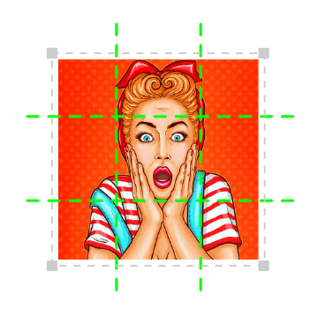

1

Sube tu imagen
Selecciona una imagen de tu computadora y haz clic en "Subir imagen"
2

Elige el tamaño de tu grilla
Elige la cantidad de filas y columnas para recortar tu imagen.
3

Haz clic en "Recortar" y descarga tu imagen recortada
Tus imágenes recortadas serán comprimidas en un archivo ZIP para facilitar la
descarga.
4

Publícalas automáticamente en Instagram
Utiliza Postcron para publicar tus imágenes automáticamente y en la secuencia
correcta con un solo clic.
Subir Imagen
Aumenta tu engagement en Instagram con buenas ideas!
Utiliza PhotoSplitter para aumentar tu engagement en Instagram.
Si necesitas más espacio para dar informaciones importantes, utiliza la grilla 3x6 y explícalo
mejor!
Haz un sorteo: dile a tu audiencia que adivine como se va a ver la grilla completa en los
comentarios.
Utiliza tu grilla de Instagram para promocionar un evento!
Publica tus imágenes en Instagram
Evita publicar cada foto recortada por separado y manualmente. Publica tus fotos
automáticamente en Instagram en un sólo clic con Postcron.
ImageSplitter es una solución al estilo navaja Suiza para el procesamiento de imágenes. Es tu
compañero ideal para recortar, redimensionar, convertir y dividir tus imágenes. Y lo mejor de este
servicio online es que es rápido, gratuito, simple e intuitivo
(saber
más):
- Interfaz clara y sencilla para tus tareas del día a día
- No es necesario instalar nada en tu computadora
- Muchas opciones de formato: jpeg, jpg, png, bmp, gif, ico
- Mutiplataforma y compatibilidad: usuarios de Windows, MacOS X y Linux pueden utilizar sin
problemas
- Ultrarrápido: convierte, recorta, redimensiona y divide en cuestión de segundos
- Completa privacidad: no te pedimos que te registres o que nos digas quien eres.
- Sin malware o bloatware

Gif a jpg
Recortador de imágenes Online
Bmp a jpg
Gratis
Png a ico
Ico a png
Recortar imágenes
Jpg a bmp
Convertir imágenes
Jpg a gif
Png a gif
Jpg a png
Png a jpg
Redimensionar imágenes
Online
Gif a png

 Cómo convertir tus imágenes con ImageSplitter
Cómo convertir tus imágenes con ImageSplitter
 Cómo redimensionar tus imágenes con ImageSplitter
Cómo redimensionar tus imágenes con ImageSplitter
 Cómo dividir tus imágenes con ImageSplitter
Cómo dividir tus imágenes con ImageSplitter
 Cómo recortar tus imágenes con ImageSplitter
Cómo recortar tus imágenes con ImageSplitter